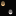
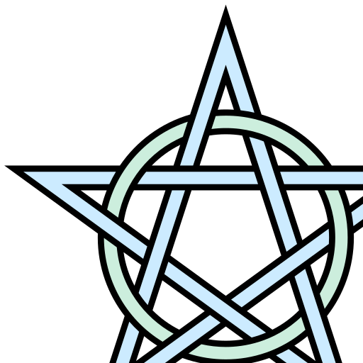

<!DOCTYPE html><title>js13k</title><script src="https://aframe.io/releases/0.8.2/aframe.min.js"></script><script src="a.js"></script><a-scene background="color:#060606" pool__rings="mixin:ring;size:10;dynamic:true" pool__obstacles="mixin:obstacle;size:10;dynamic:true"><a-assets><a-mixin id="obstacle" obstacle geometry="primitive:sphere;radius:0.3;segmentsWidth:8;segmentsHeight:5" material="flatShading:true;color:#830303;metalness:0.3"></a-mixin><a-mixin id="ring" geometry="primitive:cylinder;segmentsHeight:9;segmentsRadial:36;openEnded:true" material="color:#fff;side:back" rotation="90 0 0" scale="5 0.8 5"></a-mixin><a-mixin id="brot" attribute="rotation" from="0 0 0" to="0 25 0" dur="250" direction="alternate" repeat="indefinite"></a-mixin><a-mixin id="trot" attribute="rotation" from="-0.5 0 -2" to="0.5 0 2" dur="500" direction="alternate" repeat="indefinite"></a-mixin><a-mixin id="title" text="align:center;width:15;letterSpacing:-4;value:Whirled on the Spirit Spiral" position="0 1.5 -5"></a-mixin><a-mixin id="story" text="align:center;width:5;lineHeight:52;letterSpacing:-0.5;value:Evil Enemy, the Duplicitous with a devious blow did toss to his Wormhole the legacy of humans. In a semigloss moment the Elders of the Internet are pangloss about You will reach the dead end corridor and bring it back to their personages, who faces too much play outside not in the places where they enter secrets to databases. Let it go." position="0 -0.6 -5"></a-mixin></a-assets><a-entity light="type:ambient;color:#999"></a-entity><a-entity light="type:directional;color:#FFF;intensity:0.6" position="-0.5 1 1"></a-entity><a-entity rotation="90 0 0"><a-sky id="sky" src="#bgPic" repeat="40 20" material="opacity:0.4"></a-sky></a-entity><a-image id="ev" src="#aumPic" position="0.5 2 -45" width="8" height="8"></a-image><a-image id="penta" src="#pentaPic" position="0.7 2.5 -45.1" width="10" height="10" scale="0 0 0" material="side:front;transparent:true;opacity:1;color:darkred"><a-animation begin="dang" attribute="position" from="0.7 2.5 -45.1" to="0.7 2.5 -10" dur="1800" easing="ease-in" direction="alternate" repeat="1"></a-animation><a-animation begin="dang" attribute="scale" from="0 0 0" to="5 5 5" dur="1800" easing="ease-in" direction="alternate" repeat="1"></a-animation></a-image><a-circle id="mc" material="shader:gradient;side:both;exponent:1.3;offset:2.2;topColor:183 65 14;bottomColor:0 0 0" radius="4" position="0 0 -6" roughness="1"><a-animation begin="coff" attribute="scale" to="0 0 0" dur="500" easing="ease-out"></a-animation><a-animation begin="con" attribute="scale" to="1 1 1" dur="300" easing="ease-in"></a-animation></a-circle><a-entity id="menu" position="0 1 -0.5"><a-text mixin="title" color="#661100" position="0 1.5 -5.1"><a-animation mixin="trot"></a-animation></a-text><a-text mixin="title"><a-animation attribute="color" from="#fff" to="#660000" easing="ease-in" dur="6000" repeat="indefinite"></a-animation></a-text><a-text class="story" mixin="story" color="#551100" position="0 -0.6 -5.1"><a-animation mixin="trot"></a-animation></a-text><a-text class="story" mixin="story"></a-text><!-- Start button (desktop)--><a-cylinder class="obs" id="spc" position="-5.5 0.5 -6.5" color="#4682B4" height="4" radius="0.9" metalness="0.3" opacity="0.5" roughness="1"><a-text position="0 0 0" rotation="5 35 0" value="Station" align="center" width="8" letter-spacing="10" negate="false"></a-text></a-cylinder><!-- Start button (mobile)--><a-cylinder class="obs" id="smob" position="5.5 0.5 -6.5" color="#4682B4" height="4" radius="0.9" metalness="0.3" opacity="0.5" roughness="1"><a-text position="0 0 0" rotation="5 -35 0" value="Roaming" align="center" width="6.3" letter-spacing="10" negate="false"></a-text></a-cylinder><a-text align="center" color="#444444" width="3" value="by @SubZtep - Js13kGames @ 2018" position="0 -3.5 -5.5"></a-text><a-text align="center" color="#333333" width="2.5" value="thx4 Starlin (design ideas) + robot0001 (math ideas)" position="0 -3.85 -5.5"></a-text></a-entity><a-entity id="player"><a-camera camera-cursor look-controls rotation-listener wasd-controls="acceleration:500" fov="60"><a-triangle material="color:#ff0000;shader:flat;opacity:0.65" position="0 -0.012 -1" scale="0.025 0.025 1"></a-triangle><a-triangle material="color:#ff0000;shader:flat;opacity:0.65" position="0 0.012 -1" scale="0.025 0.025 1" rotation="0 0 180"></a-triangle><a-entity id="ray" position="0 0 0" raycaster="objects:.obs;far:60;recursive:false" cursor="fuse:true;fuseTimeout:500"></a-entity><a-ring id="crosshair" position="0 0 -0.99" radius-outer="0.05" radius-inner="0.04" theta-start="90" material="color:#000;shader:flat"><a-ring position="0 0 -0.1" radius-outer="0.06" radius-inner="0.04" material="color:#fff;shader:flat;opacity:0.3"></a-ring><a-animation begin="aim" end="endAim" easing="ease-out" attribute="theta-Length" fill="forwards" from="45" to="360" dur="500"></a-animation></a-ring></a-camera></a-entity></a-scene><script>new Game()</script>